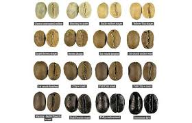

MERAUP UNTUNG DARI KOPI
KOMODITAS YANG BESAR
Karna anak muda jaman sekarang suka sekali dengan tempat tempat
yang asik, nyaman, free wi-fi dan update.
maka dari itu saya dirikan kedai kopi ini untuk para kalangan muda masa kini yang suka...
1. Instagramable
Instagram bagi anak muda zaman sekarang merupakan social media paling penting. Banyak sekali anak muda yang sangat memperhatikan feeds instagramnya, foto apa yang harus di post di akun instagramnya supaya kelihatan bagus dan estetik. Coffee Shop dengan desain interior lucu dan menarik dapat dijadikan lokasi tempat anak muda mengambil foto untuk akun instagramnya. Ataupun sesimpel memotret kopi yang diminumnya di Coffee Shop, sudah dapat dijadikan bahan untuk dipost di akun instagramnya, misalnya dengan caption: #coffeeoftheday.
2. Nyaman
Desain interior Coffee Shop pada umumnya minimalis dan modern, sehingga rasanya nyaman untuk bersantai dan ngobrol bersama teman-teman. Selain itu, biasanya Coffee Shop dilengkapi fasilita AC dan diiringi dengan musik yang enak didengar, sehingga pengunjung betah untuk berlama-lama di Coffee Shop. Harga makanan dan minuman yang dijual juga terbilang murah. Oleh karena itu, dengan harga yang relatif sama, anak muda lebih memilih untuk nongkrong di Coffee Shop daripada di restoran fast food.
3. Penikmat coffe
Alasan ini sepertinya tidak usah dijelaskan lagi. Ini adalah alasan yang paling murni mengapa seseorang datang ke Coffee Shop, yaitu untuk datang dan menikmati kopi yang dijual disitu. Penikmat kopi datang ke Coffee Shop tidak peduli dengan fasilitas yang ada, menu yang bervariasi, atau tempat yang enak dipandang mata. Namun, yang terpenting adalah kenikmatan yang didapat dari kopi yang diracik dan dijual ditempat itu.
Itu dia alasan kenapa Coffee Shop menjadi tempat favorit anak muda untuk nongkrong. Kalau kamu, di mana tempat nongkrong favoritmu?
Community Writer